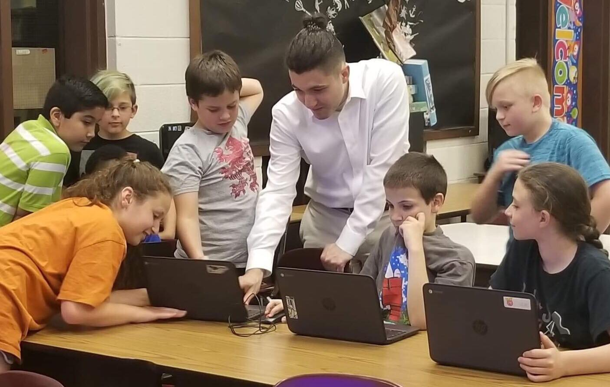

The Wick Editor is a free and open-source tool for creating games, animations, and everything in-between. It's designed to be the most accessible tool for creating multimedia projects on the web.
The Wick Editor is a hybrid of an animation tool and a coding environment, heavily inspired by similar tools such as Flash, HyperCard, and Scratch. I created Wick Editor along with Luca Damasco in 2016 as a response to a growing need for such a tool - take a look at this blog post for more on the original motivations behind Wick.
Since then, Wick Editor has been used in over 100 countries and has more than 5000 weekly users during the school year. It has recieved funding from the Mozilla Open Source Support (MOSS) awards program and the Frank-Ratchye Fund for Art @ the Frontier.
At Wick Editor, my main responsibility was leading the development of the tool. One of the most important goals for Wick Editor is to be as accessible as possible while still being a powerful tool. Because of this, much of my work had to do with using new and/or experimental web technologies to allow for advanced features that not only work in-browser, but also on extremely low-end devices that are common in schools.
Some of the more challenging features to implement in this way were:
Other than leading development, I also acted as the creative director of the tool. It was imperative to have a strong understanding of the needs and attitudes of the community of fans and users of Wick Editor. Co-hosting events with Luca was a regular occurence - we believed that the only way to really see how well the tool worked is to go out and run in-person workshops in schools, universities, and other out-of-school educational programs.
This community outreach was at the core how final design decisions were made. At React Conf 2019, Luca gave an excellent talk detailing our testing-first based approach to designing Wick. You can watch that talk here.
In 2021, Wick Editor was donated to and is currently maintained by the Entertainment Technology Center at Carnegie Mellon University.